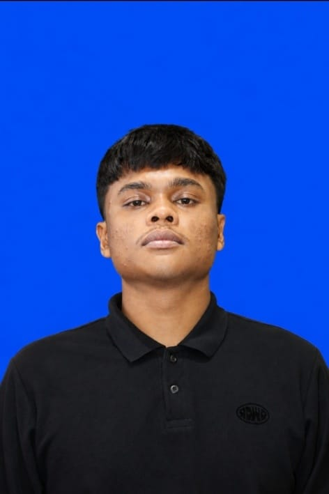

2024 – SEKARANG
PENDIDIKAN TINGGI
UIN Ar-Raniry Banda Aceh
Program Studi: Teknologi Informasi
Mempelajari teknologi informasi, pemrograman, dan pengembangan sistem.
MAHASISWA • TEKNOLOGI INFORMASI
Mahasiswa yang tertarik pada teknologi, pengembangan web, dan desain antarmuka. Saya senang mempelajari hal baru serta mengembangkan ide menjadi proyek digital.

FMMahasiswa · Calon Web Developer
01 / TENTANG SAYA
Saya percaya bahwa teknologi yang baik bukan hanya berfungsi, tetapi juga mudah digunakan dan memberikan manfaat.
Saya adalah mahasiswa yang sedang mengembangkan pengetahuan di bidang teknologi informasi. Saya tertarik mempelajari pembuatan website, desain antarmuka pengguna, serta pengolahan data.
Melalui tugas kuliah dan proyek mandiri, saya berusaha meningkatkan kemampuan teknis, komunikasi, dan pemecahan masalah secara bertahap.
02 / PENDIDIKAN
Riwayat pendidikan saya hingga saat ini.
Program Studi: Teknologi Informasi
Mempelajari teknologi informasi, pemrograman, dan pengembangan sistem.
Pendidikan menengah: Madrasah Aliyah
Lengkapi bagian ini sesuai riwayat pendidikan Anda.
03 / PENGALAMAN & PROYEK
Pengalaman dan proyek yang pernah saya ikuti dan kembangkan.
Membuat dashboard untuk menampilkan data dalam bentuk visualisasi dan menyediakan filter agar data lebih mudah dianalisis.
Mengikuti lomba Musabaqah Tilawatil Qur’an (MTQ) pada cabang kaligrafi sebagai pengalaman mengembangkan kreativitas dan ketelitian.
Mempelajari dasar teknologi dan mencoba menyelesaikan tugas praktikum perkuliahan.
Catatan: pertahankan proyek yang benar-benar pernah Anda kerjakan, lalu ubah deskripsinya agar sesuai dengan hasil pekerjaan Anda.
04 / KETERAMPILAN
DI LUAR KELAS
Keterampilan dan minat ini dapat dikembangkan lebih lanjut melalui latihan dan pengalaman.
05 / KONTAK
Saya terbuka untuk berdiskusi, berbagi ide, dan belajar bersama.
Email: fauzanmisra50@gmail.com · Instagram: @fauznmsra